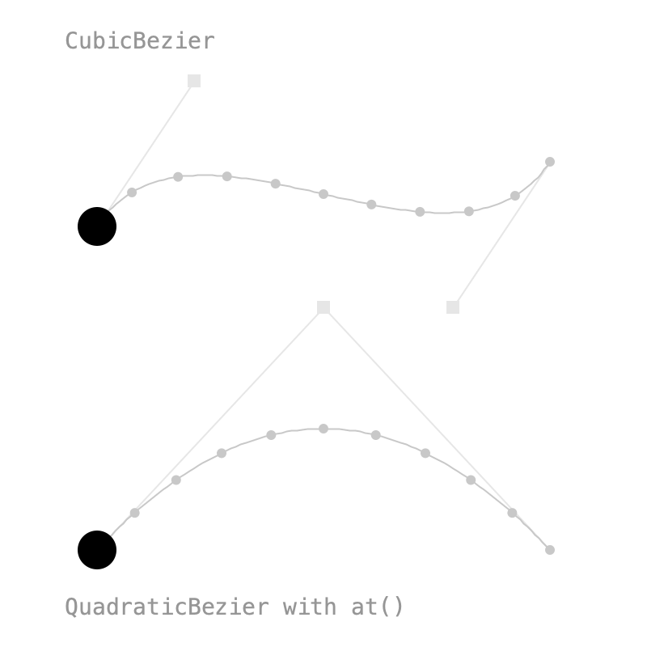
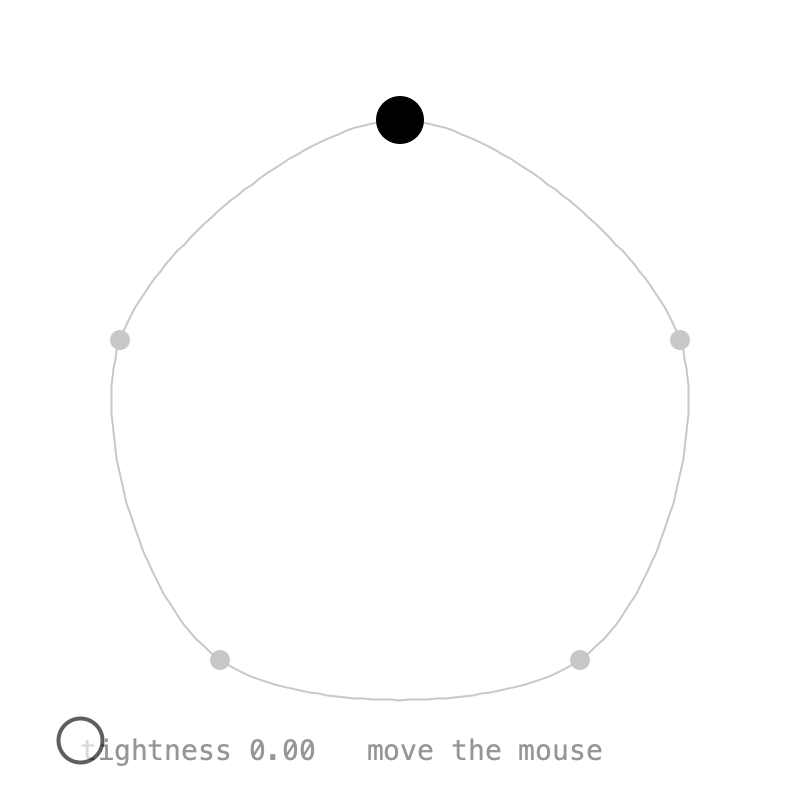
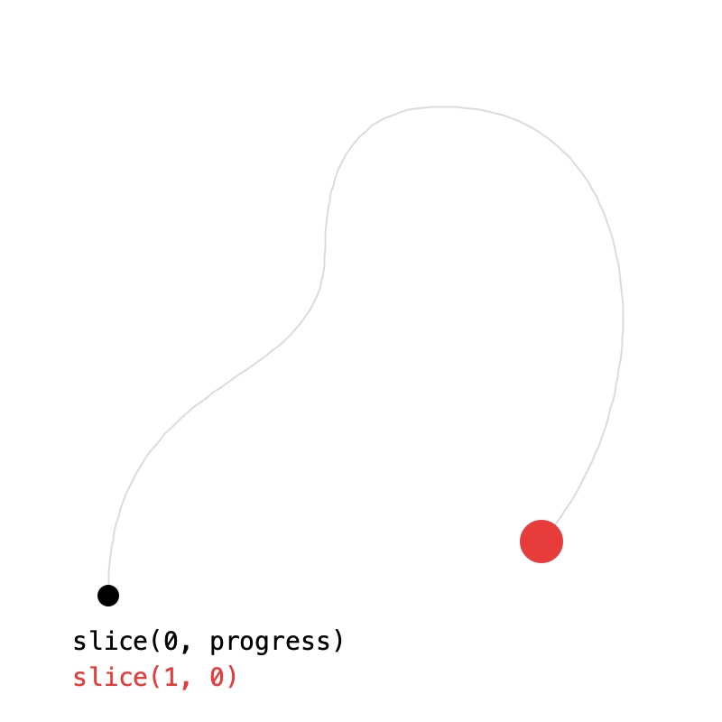
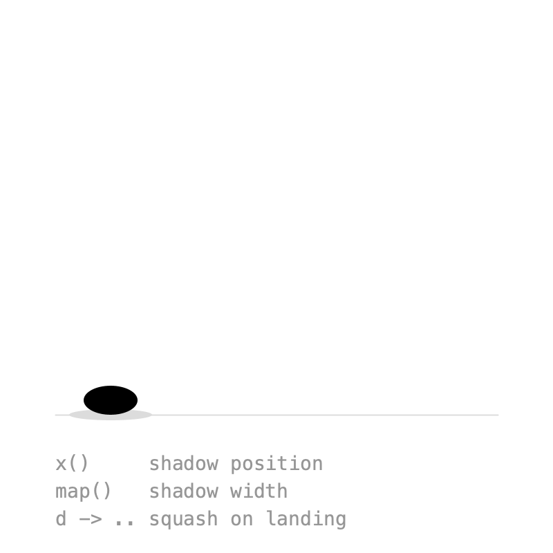
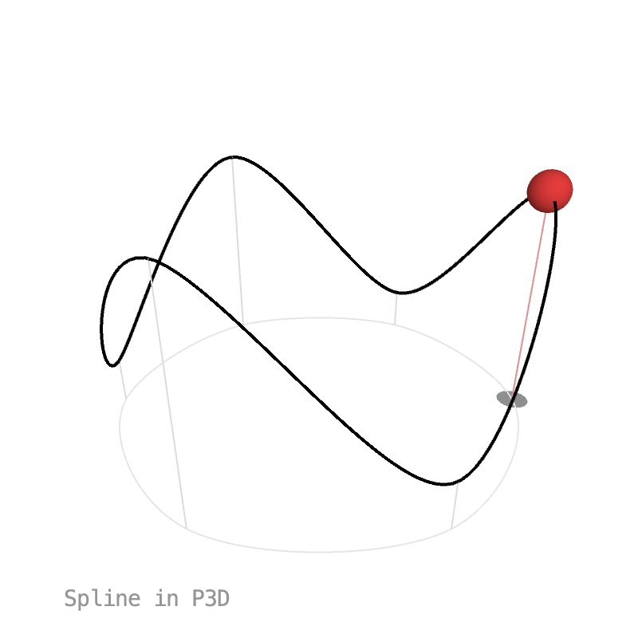

6. Paths¶
Blending two PVectors moves in a straight line. To move along a curve, a key can follow a path instead of holding a fixed value. The path classes live in their own package:
Bézier curves¶

CubicBezier takes the same four points as Processing's bezier(), QuadraticBezier takes three:
Two keys on the same path travel along all of it, start to end:
at() pins a key to one position on the path: 0 is the start, 1 the end. From at(0) to at(1) and back to at(0) goes there and back again. Easing works as usual, shaping the progress along the path:
b = Keyed.of(new PVector())
.key(Key.at(0).setEasing(1 / 3f), quad.at(0))
.key(Key.at(1.5f).setEasing(1 / 3f), quad.at(1))
.key(Key.at(3).setEasing(1 / 3f), quad.at(0));
A path is a Tween<PVector>: value(d) is the point at d, from 0 to 1. Paths are traveled at constant speed, so even steps in d are evenly spaced, as the dots in the sketch show.
Full sketch: Bezier
import ch.domizai.keyed.*;
import ch.domizai.keyed.tween.*;
PVector[] c = {
new PVector(60, 140), new PVector(120, 50),
new PVector(280, 190), new PVector(340, 100)
};
PVector[] q = {
new PVector(60, 340), new PVector(200, 190), new PVector(340, 340)
};
CubicBezier cubic;
QuadraticBezier quad;
Keyed<PVector> a, b;
void settings() {
size(400, 400);
}
void setup() {
Keyed.init(this).setDuration(3);
textFont(createFont("Courier", 14));
cubic = new CubicBezier(c[0], c[1], c[2], c[3]);
quad = new QuadraticBezier(q[0], q[1], q[2]);
// A key can follow a path instead of holding a fixed value.
// Two keys on the same path travel along all of it, start to end.
a = Keyed.of(new PVector())
.key(0, cubic)
.key(3, cubic);
// at() pins a key to one position on the path: 0 is the start, 1 the end.
// From at(0) to at(1) and back to at(0) goes there and back again.
// Easing works as usual, shaping the progress along the path.
b = Keyed.of(new PVector())
.key(Key.at(0).setEasing(1 / 3f), quad.at(0))
.key(Key.at(1.5f).setEasing(1 / 3f), quad.at(1))
.key(Key.at(3).setEasing(1 / 3f), quad.at(0));
}
void draw() {
background(255);
handle(c[0], c[1]);
handle(c[3], c[2]);
handle(q[0], q[1]);
handle(q[2], q[1]);
drawPath(cubic);
drawPath(quad);
noStroke();
fill(0);
PVector pa = a.value();
circle(pa.x, pa.y, 24);
PVector pb = b.value();
circle(pb.x, pb.y, 24);
fill(150);
text("CubicBezier", 40, 30);
text("QuadraticBezier with at()", 40, 380);
}
void drawPath(Path p) {
// A path is a Tween<PVector>: value(d) is the point at d, from 0 to 1.
noFill();
stroke(200);
beginShape();
for (int i = 0; i <= 100; i++) {
PVector v = p.value(i / 100f);
vertex(v.x, v.y);
}
endShape();
// Paths are traveled at constant speed, so even steps in d are evenly spaced.
noStroke();
fill(200);
for (int i = 0; i <= 10; i++) {
PVector v = p.value(i / 10f);
circle(v.x, v.y, 6);
}
}
void handle(PVector anchor, PVector control) {
stroke(230);
line(anchor.x, anchor.y, control.x, control.y);
noStroke();
fill(230);
rectMode(CENTER);
rect(control.x, control.y, 8, 8);
rectMode(CORNER);
}
Splines¶

Spline works like curveVertex(): the curve passes through every point except the first and last, which only shape its ends. Wrapping the points around closes the loop:
spline = new Spline(pts[4], pts[0], pts[1], pts[2], pts[3], pts[4], pts[0], pts[1]);
pos = Keyed.of(new PVector())
.key(0, spline)
.key(5, spline);
setTightness() is the same as curveTightness(): 0 is round, 1 gives straight lines. In the sketch, the mouse controls it.
Full sketch: SplinePath
import ch.domizai.keyed.*;
import ch.domizai.keyed.tween.*;
PVector[] pts = {
new PVector(200, 60),
new PVector(340, 170),
new PVector(290, 330),
new PVector(110, 330),
new PVector(60, 170)
};
Spline spline;
Keyed<PVector> pos;
float tightness = 0;
void settings() {
size(400, 400);
}
void setup() {
Keyed.init(this).setDuration(5);
textFont(createFont("Courier", 14));
// Like curveVertex(): the curve passes through every point except
// the first and last, which only shape its ends. Wrapping the points
// around like this closes the loop.
spline = new Spline(pts[4], pts[0], pts[1], pts[2], pts[3], pts[4], pts[0], pts[1]);
pos = Keyed.of(new PVector())
.key(0, spline)
.key(5, spline);
}
void mouseMoved() {
// Same as curveTightness(): 0 is round, 1 gives straight lines.
tightness = constrain(map(mouseX, 40, 360, 0, 1), 0, 1);
spline.setTightness(tightness);
}
void draw() {
background(255);
noFill();
stroke(200);
beginShape();
for (int i = 0; i <= 200; i++) {
PVector v = spline.value(i / 200f);
vertex(v.x, v.y);
}
endShape();
noStroke();
fill(200);
for (PVector p : pts) {
circle(p.x, p.y, 10);
}
PVector p = pos.value();
fill(0);
circle(p.x, p.y, 24);
fill(150);
text("tightness " + nf(tightness, 1, 2) + " move the mouse", 40, 380);
}
Chaining and slicing¶

add() chains paths into a Curve, played one after another at even speed. Each path should start where the previous one ends:
slice(t0, t1) is the part of a path between t0 and t1. Here the black line is drawn on with curve.slice(0, progress). With t1 < t0 the slice runs backwards, which is how the red ball travels the curve in reverse:
Full sketch: CurveSlice
import ch.domizai.keyed.*;
import ch.domizai.keyed.tween.*;
Curve curve;
Path reversed;
Keyed<Float> progress;
Keyed<PVector> back;
void settings() {
size(400, 400);
}
void setup() {
Keyed.init(this).setDuration(4);
textFont(createFont("Courier", 14));
// add() chains paths into a Curve, played one after another at even speed.
// Each path starts where the previous one ends.
curve = new CubicBezier(
new PVector(60, 330), new PVector(60, 200),
new PVector(180, 220), new PVector(180, 140))
.add(new QuadraticBezier(
new PVector(180, 140), new PVector(180, 50), new PVector(260, 60)))
.add(new CubicBezier(
new PVector(260, 60), new PVector(360, 70),
new PVector(370, 220), new PVector(300, 300)));
// Draws the curve on in 3 seconds, then holds for 1.
progress = Keyed.of(0f)
.key(Key.at(0).setEasing(1 / 3f), 0f)
.key(Key.at(3).setEasing(1 / 3f), 1f);
// slice(t0, t1) is the part of a path between t0 and t1.
// With t1 < t0 it runs backwards.
reversed = curve.slice(1, 0);
back = Keyed.of(new PVector())
.key(0, reversed)
.key(4, reversed);
}
void draw() {
background(255);
drawPath(curve, 220, 1);
// Only the first part of the curve, growing with progress.
float p = progress.value();
drawPath(curve.slice(0, p), 0, 4);
PVector tip = curve.value(p);
noStroke();
fill(0);
circle(tip.x, tip.y, 12);
PVector b = back.value();
fill(230, 60, 60);
circle(b.x, b.y, 24);
fill(0);
text("slice(0, progress)", 40, 360);
fill(230, 60, 60);
text("slice(1, 0)", 40, 380);
}
void drawPath(Path path, int col, float weight) {
noFill();
stroke(col);
strokeWeight(weight);
beginShape();
for (int i = 0; i <= 150; i++) {
PVector v = path.value(i / 150f);
vertex(v.x, v.y);
}
endShape();
strokeWeight(1);
}
Tweens¶

Paths are one kind of Tween<T>: a value as a function of d from 0 to 1. Tweens can be transformed:
x()andy()turn a path into aTween<Float>of one coordinate. The shadow follows the ball along the ground withhop.x().map(f)turns a tween's values into something else. The higher the ball, the narrower its shadow.
Tween<Float> hopX = hop.x();
shadowX = Keyed.of(0f)
.key(0, hopX)
.key(2, hopX);
Tween<Float> hopWidth = hop.map(p -> map(p.y, ground - r, 140, 60, 20));
And since a Tween is just a function, a lambda works too. This one squashes the ball as it lands:
Tween<Float> landing = d -> 1 - 0.3f * pow(abs(cos(d * TWO_PI)), 12);
squash = Keyed.of(1f)
.key(0, landing)
.key(2, landing);
Full sketch: TweenMap
import ch.domizai.keyed.*;
import ch.domizai.keyed.tween.*;
float ground = 300;
float r = 15;
Keyed<PVector> ball;
Keyed<Float> shadowX, shadowWidth, squash;
void settings() {
size(400, 400);
}
void setup() {
Keyed.init(this).setDuration(2);
textFont(createFont("Courier", 14));
// An arc, then the same arc backwards: a hop there and back.
QuadraticBezier arc = new QuadraticBezier(
new PVector(80, ground - r), new PVector(200, 0), new PVector(320, ground - r));
Curve hop = arc.add(arc.slice(1, 0));
ball = Keyed.of(new PVector())
.key(0, hop)
.key(2, hop);
// x() turns a path into a Tween<Float> of its x coordinate (y() works too),
// so the shadow follows the ball along the ground.
Tween<Float> hopX = hop.x();
shadowX = Keyed.of(0f)
.key(0, hopX)
.key(2, hopX);
// map() turns a tween's values into something else:
// the higher the ball, the narrower its shadow.
Tween<Float> hopWidth = hop.map(p -> map(p.y, ground - r, 140, 60, 20));
shadowWidth = Keyed.of(0f)
.key(0, hopWidth)
.key(2, hopWidth);
// A Tween is just a function of d from 0 to 1, so a lambda works too.
// This one squashes the ball as it lands, at d = 0, 0.5 and 1.
Tween<Float> landing = d -> 1 - 0.3f * pow(abs(cos(d * TWO_PI)), 12);
squash = Keyed.of(1f)
.key(0, landing)
.key(2, landing);
}
void draw() {
background(255);
stroke(220);
line(40, ground, 360, ground);
noStroke();
fill(220);
ellipse(shadowX.value(), ground, shadowWidth.value(), 8);
// Squashed flat and wide, with the bottom kept on the path.
PVector p = ball.value();
float s = squash.value();
fill(0);
ellipse(p.x, p.y + r * (1 - s), 2 * r * (2 - s), 2 * r * s);
fill(150);
text("x() shadow position", 40, 340);
text("map() shadow width", 40, 360);
text("d -> .. squash on landing", 40, 380);
}
Paths in 3D¶

Paths use x, y and z, so everything above works in P3D too. The track is a closed Spline through six points, and the shadow is the same track flattened onto the ground with map():
track = new Spline(pts[5], pts[0], pts[1], pts[2], pts[3], pts[4], pts[5], pts[0], pts[1]);
shadowPath = track.map(p -> new PVector(p.x, ground, p.z));
Full sketch: Path3D
import ch.domizai.keyed.*;
import ch.domizai.keyed.tween.*;
float ground = 60;
PVector[] pts;
Spline track;
Tween<PVector> shadowPath;
Keyed<PVector> ball, shadow;
Keyed<Float> spin;
void settings() {
size(400, 400, P3D);
}
void setup() {
Keyed.init(this).setDuration(6);
textFont(createFont("Courier", 14));
// Six points around a circle on the ground (x and z),
// alternating high and low (y points down in Processing).
int n = 6;
pts = new PVector[n];
for (int i = 0; i < n; i++) {
float a = i * TWO_PI / n;
float y = i % 2 == 0 ? -80 : 30;
pts[i] = new PVector(cos(a) * 130, y, sin(a) * 130);
}
// Paths use x, y and z, so they work in 3D just like in 2D.
// Wrapping the points around closes the loop, as in SplinePath.
track = new Spline(pts[n - 1], pts[0], pts[1], pts[2], pts[3], pts[4], pts[5], pts[0], pts[1]);
ball = Keyed.of(new PVector())
.key(0, track)
.key(6, track);
// map() flattens the track onto the ground, for the shadow.
shadowPath = track.map(p -> new PVector(p.x, ground, p.z));
shadow = Keyed.of(new PVector())
.key(0, shadowPath)
.key(6, shadowPath);
// Half a turn per loop, to see the depth.
spin = Keyed.of(0f)
.key(0, 0f)
.key(6, PI);
}
void draw() {
background(255);
fill(150);
text("Spline in P3D", 40, 380);
lights();
translate(width / 2, height / 2);
rotateX(-0.45f);
rotateY(spin.value());
// The track's shadow on the ground.
noFill();
stroke(230);
drawPath(shadowPath);
// The track.
stroke(0);
strokeWeight(2);
drawPath(track);
strokeWeight(1);
// Posts from the ground up to each point.
stroke(220);
for (PVector p : pts) {
line(p.x, ground, p.z, p.x, p.y, p.z);
}
PVector s = shadow.value();
PVector b = ball.value();
stroke(230, 60, 60, 120);
line(s.x, s.y, s.z, b.x, b.y, b.z);
noStroke();
fill(200);
pushMatrix();
translate(s.x, s.y, s.z);
rotateX(HALF_PI);
circle(0, 0, 20);
popMatrix();
fill(230, 60, 60);
pushMatrix();
translate(b.x, b.y, b.z);
sphere(12);
popMatrix();
}
void drawPath(Tween<PVector> path) {
beginShape();
for (int i = 0; i <= 200; i++) {
PVector v = path.value(i / 200f);
vertex(v.x, v.y, v.z);
}
endShape();
}
Next: Effects.